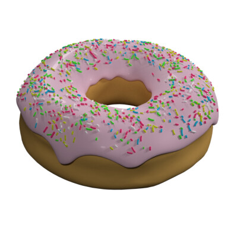
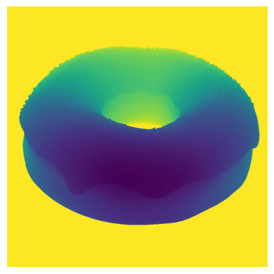
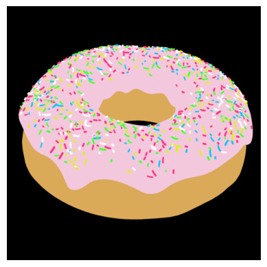
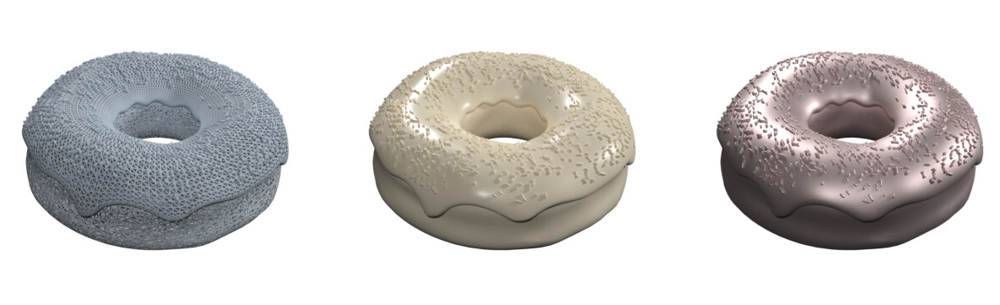
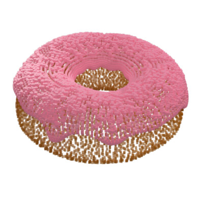
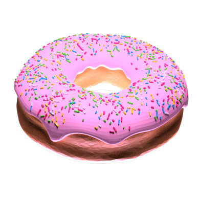

Feature walkthrough¶
This page will guide you through some of the main features of Blendify through rendering a donut mesh in multiple configurations. The code is also available as an ipython notebook on Google Colab.
0. Imports and mesh loading¶
We will start by importing the necessary modules and the code to load the donut mesh.
The mesh is stored in a zip file. Inside there are three separate objects: donut_base, donut_icing, and donut_sprinkles.
Each object defines the corresponding part of the geometry.
We will load each of them and obtain the vertices and faces of the joint mesh, as well as UV map and face indices for each
of the object to allow per-part material definition. One more information we will get is the number of vertices for each object to
allow recovering of the original parts.
code
# system libraries needed to load the compressed mesh
from io import BytesIO
from zipfile import ZipFile
import matplotlib as mpl
import matplotlib.pyplot as plt
import numpy as np
import trimesh
from blendify import scene
from blendify.colors import UniformColors, VertexUV, FileTextureColors, VertexColors
from blendify.materials import PrincipledBSDFMaterial, MetalMaterial, \
PlasticMaterial, PrincipledBSDFWireframeMaterial
%matplotlib inline
def load_donut_mesh(path_to_zip: str):
donut_file = BytesIO(ZipFile(path_to_zip).read("donut.obj"))
mesh = trimesh.load(donut_file, "obj", process=False)
# Create accumulated mesh
offset_v, offset_f = 0, 0
vertices, faces, uv_map, faces_material = [], [], [], []
vertices_count = {}
for obj_ind, obj_key in enumerate(["donut_base", "donut_icing", "donut_sprinkles"]):
# Select object from the TriMesh scene
obj_vertices, obj_faces = mesh.geometry[obj_key].vertices, mesh.geometry[obj_key].faces
vertices_count[obj_key] = len(obj_vertices)
# Accumulate vertices and faces
vertices.append(np.asarray(obj_vertices))
faces.append(np.asarray(obj_faces) + offset_v)
# Accumulate face indexes for per-face materials
faces_material.append(np.full(len(obj_faces), fill_value=obj_ind, dtype=int))
# Accumulate UV map
visual_kind = mesh.geometry[obj_key].visual.kind
if visual_kind is not None and visual_kind == "texture":
uv_map.append(mesh.geometry[obj_key].visual.uv)
else:
uv_map.append(np.zeros((len(obj_vertices), 2), dtype=np.float32))
# Accumulate offsets for vertices and faces
offset_v += len(obj_vertices)
offset_f += len(obj_faces)
vertices = np.concatenate(vertices)
faces = np.concatenate(faces)
faces_material = np.concatenate(faces_material)
uv_map = np.concatenate(uv_map)
return vertices, faces, uv_map, faces_material, vertices_count
vertices, faces, uv_map, faces_material, vertices_count = load_donut_mesh("examples/assets/donut.obj.zip")
1. Adding mesh to the scene¶
The following code adds the donut mesh to the scene. Each of the parts gets a separate material and color.
To define the assignment of materials we use faces_material array that stores indices of the material for each face.
# Create per-part materials and colors
# Base and Icing have uniform colors
material_base = PrincipledBSDFMaterial(roughness=0.4, clearcoat_roughness=0.03)
material_icing = PrincipledBSDFMaterial(roughness=0.545, clearcoat=0.1, clearcoat_roughness=0.03)
colors_base = UniformColors((0.7, 0.4, 0.1))
colors_icing = UniformColors((0.9, 0.58, 0.72))
# Sprinkles have texture colors to allow per-sprinkle coloring
material_sprinkles = PrincipledBSDFMaterial(roughness=0.894, clearcoat_roughness=0.03)
vertex_uv_map = VertexUV(uv_map)
colors_sprinkles = FileTextureColors("../assets/donut_sprinkles.png", vertex_uv_map)
# Add mesh to the scene
donut_mesh = scene.renderables.add_mesh(
vertices, faces,
faces_material=faces_material,
material=[material_base, material_icing, material_sprinkles],
colors=[colors_base, colors_icing, colors_sprinkles]
)
donut_mesh.set_smooth(True)
2. Setting camera and lights¶
The following code sets the camera and lights for the scene. The camera is set to a perspective camera and rotated to a pre-defined value. Then, three point lights are added to the scene with different positions.
# Set camera
scene.set_perspective_camera(
(800, 800), fov_x=np.deg2rad(20.8),
translation=(0, -0.56, 0.43),
rotation=(0.889, 0.458, 0, 0),
)
# Set lights
scene.lights.set_background_light(0.01)
lights = [scene.lights.add_point(strength=25, shadow_soft_size=0.1, translation=(-0.3, 1.0, 0.7)),
scene.lights.add_point(strength=25, shadow_soft_size=0.1, translation=(1.1, 0.13, 0.6)),
scene.lights.add_point(strength=25, shadow_soft_size=0.1, translation=(-0.1, -1.1, 1.2))]
3. Rendering¶
The following code renders the scene and displays the result.
image = scene.render(use_gpu=True, samples=128)
plt.axis('off')
_ = plt.imshow(image)


4. Depth map rendering¶
Setting the save_depth flag to True will additionally render the depth map of the scene.
image, depth = scene.render(use_gpu=True, samples=128, save_depth=True,)
# Filter infinite values
finite_depth = depth[np.isfinite(depth)]
# Normalize depth values
depth = (depth-np.min(finite_depth))/(np.max(finite_depth)-np.min(finite_depth))
# Convert to desired coolormap
depth = (mpl.colormaps['viridis'](depth)*255).astype(np.uint8)
plt.axis('off')
_ = plt.imshow(depth)


5. Albedo rendering¶
Setting the save_albedo flag to True will additionally render the albedo map of the scene.
image, albedo = scene.render(use_gpu=True, samples=128, save_albedo=True)
plt.axis('off')
_ = plt.imshow(albedo)


6. Rendering with various materials¶
Next, we will render the donut with different materials and colors. Concretely we will use
PrincipledBSDFWireframeMaterialthat renders a wireframe on top of the mesh;PlasticMaterialthat simulates a plastic surface;MetalMaterialthat simulates a metal surface.
# Remove old mesh
scene.renderables.remove(donut_mesh)
# Create list of materials and colors to iterate over
material_iterator = [
PrincipledBSDFWireframeMaterial(
wireframe_color=(0.7, 0.8, 0.9, 1.0), wireframe_thickness=0.001
),
PlasticMaterial(),
MetalMaterial()
]
color_iterator = [
UniformColors((0.2, 0.2, 0.2, 0.3)),
UniformColors((1.0, 0.9, 0.7, 1.0)),
UniformColors((1.0, 0.8, 0.8, 1.0))
]
# Create subplots
fig, ax = plt.subplots(1, 3, figsize=(15, 5))
# Render iteratively
donut_mesh = None
for index, (color, material) in enumerate(zip(color_iterator, material_iterator)):
if donut_mesh is None:
donut_mesh = scene.renderables.add_mesh(
vertices, faces, material=material, colors=color
)
donut_mesh.set_smooth(True)
else:
donut_mesh.update_colors(color)
donut_mesh.update_material(material)
image = scene.render(use_gpu=True, samples=128)
ax[index].axis('off')
ax[index].imshow(image)
plt.show()


7. Point cloud rendering¶
The following code renders the donut as a point cloud. We use only the vertices of the mesh to create the point cloud.
We also use vertices_count to recover the original parts of the donut and color the base and the icing differently.
# Remove old mesh
scene.renderables.remove(donut_mesh)
# Create colors for the point cloud
point_colors = np.ones((len(vertices), 4))
point_colors[:vertices_count["donut_base"]] = np.array([0.8, 0.5, 0.1, 0.4])
point_colors[vertices_count["donut_base"]:] = np.array([1.0, 0.7, 0.8, 0.6])
color = VertexColors(point_colors)
# Use only points from the mesh to create the point cloud
donut_pc = scene.renderables.add_pointcloud(
vertices, colors=color, material=material_base,
point_size=0.001, base_primitive="cube", particle_emission_strength=0.1
)
# Render
image = scene.render(use_gpu=True, samples=128)
plt.axis('off')
_ = plt.imshow(image)


8. Rendering with altered lighting¶
In the last example we will alter the lighting of the scene. We will replace the point lights with area lights.
# Remove old pc and lights from the scene
scene.renderables.remove(donut_pc)
for light in lights:
scene.lights.remove(light)
# Add donut mesh
donut_mesh = scene.renderables.add_mesh(
vertices, faces,
faces_material=faces_material,
material=[material_base, material_icing, material_sprinkles],
colors=[colors_base, colors_icing, colors_sprinkles]
)
# Set the new lights
scene.lights.add_area(
"circle", size=0.5, strength=25, color = (0.9, 0.4, 0.8),
translation=donut_mesh.translation - np.array([0, 0, 0.3]),
rotation=(0, 180, 0), rotation_mode="eulerXYZ"
)
scene.lights.add_area(
"circle", size=0.5, strength=25, color=(0.9, 0.4, 0.8),
translation=donut_mesh.translation + np.array([0, 0, 1]),
rotation=(0, 0, 0), rotation_mode="eulerXYZ"
)
# Render
image = scene.render(use_gpu=True, samples=128)
plt.axis('off')
_ = plt.imshow(image)

